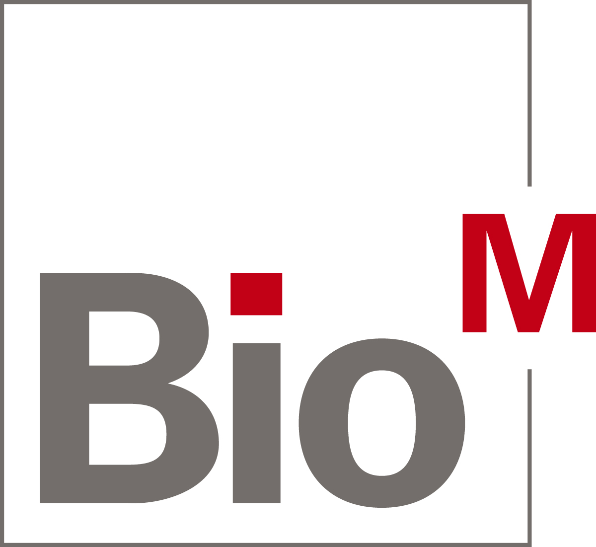
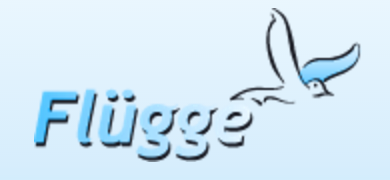

We have developed a targeted antimitotic drug called Photostatin (PST), published in the prestigious scientific journal Cell. PST has a unique selectivity advantage over all other antimitotics: PST can be targeted to affect specific tissues and avoid all the others, just by specifically illuminating the tissue where it should be active. We aim to develop PST as a novel chemotherapeutic that targets cancer tumours while sparing healthy tissues, delivering effective tumour therapy with much reduced side-effects compared to current chemotherapies.
• PST could tackle refractory tumours, which do not respond to tolerable doses of current drugs.
• PST could treat weaker patients, who cannot tolerate the "normal" side-effects of current treatments.
CytoSwitch will take PST towards clinical trials as a tumour-targeted chemotherapeutic. In parallel, we will commercialise PST derivatives as precision research tools to control the cytoskeleton with unprecedented precision. CytoSwitch is currently in the pre-seed phase.
 October 2017. CytoSwitch won the second pitch prize at the BioEntrepreneurship Summit organized by BioM.
November 2016. CytoSwitch has secured pre-seed funding through the EXIST programme to carry out preclinical studies for the next three years.
 July 2016. CytoSwitch was awarded the Flügge Startup Funding from the Bavarian state to support its team.
The CytoSwitch project won the BioVaria Spinoff Award in 2015.
Following our 2015 paper in the scientific journal Cell, Photostatins have generated much press attention, as potential chemotherapeutics for curing tumours without creating side-effects in healthy tissues.